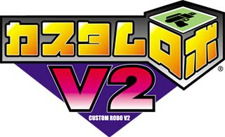
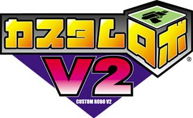
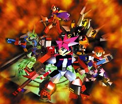
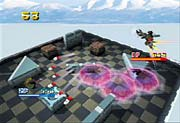
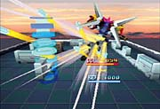

|  |
|||||
|
|  |
|||||
|
|  |
| 激闘のグレートロボカップから1年・・・ 物語は始まります。新しいロボ、新しいパーツ、そして新たなライバル達が次々と登場。初めて遊ぶ人でもシナリオを進めるうちに、どんどん強くなっていけるでしょう。 そしてなんと、「シナリオモード」は2本立て!「旅立ち編」と「激闘編」の2つのシナリオがプレイできます。何回でも遊びたくなる 仕掛けも盛りだくさん！様々な面で パワーアップした「シナリオモード」はあなたを新たなカスタム ロボワールドへ招待します。 |
|  |  |
| 仲間と協力してコンボ攻撃！！ピンチの時には助け合えっ！！ 今度の「カスタムロボ」は最大4人まで遊べる新しいバトルシステムが搭載されました！新モード、「2on2バトル」は2人でタッグを組みバトルをするモードです。仲間と意気を合わせ勝利を目指すこのモードは今までとは違った面白さを感じてもらえるはずです。もちろん、カスタムロボの基本、1対1の「ＶＳバトル」も健在！人数にあわせ、いろいろな遊び方、楽しみ方ができる、それが『カスタムロボＶ2』なのです。 |